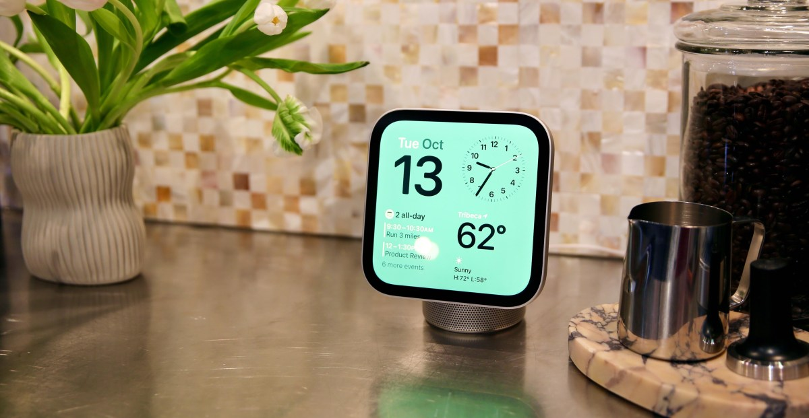
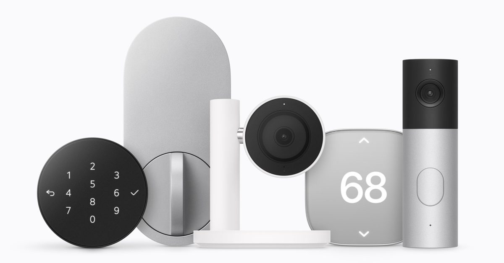
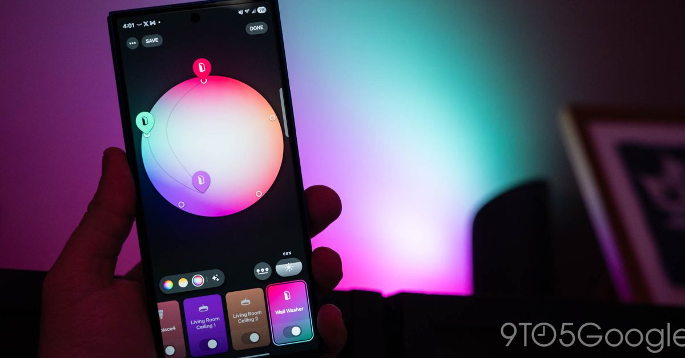
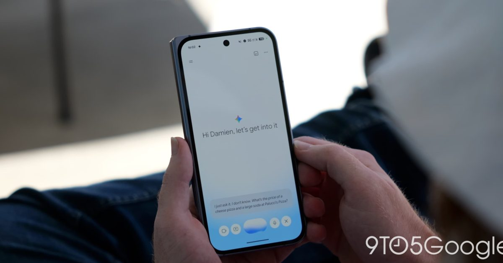

애플, 첫 스마트홈 디스플레이 '홈뷰' 출시...단순함으로 호평
애플이 처음으로 선보인 스마트홈 디스플레이 홈뷰가 복잡한 기능보다 단순함에 초점을 맞춘 디자인으로 주목받고 있다. 여러 매체는 가족 구성원이 함께 쓸 수 있는 공용 인터페이스라는 점에서 기존 스마트홈 허브와 차별화된다고 평가했다. 가격은 299달러로 책정됐으며 아마존 등에서 사전 예약 판매가 시작됐다.

애플이 처음으로 선보인 스마트홈 디스플레이 홈뷰가 복잡한 기능보다 단순함에 초점을 맞춘 디자인으로 주목받고 있다. 여러 매체는 가족 구성원이 함께 쓸 수 있는 공용 인터페이스라는 점에서 기존 스마트홈 허브와 차별화된다고 평가했다. 가격은 299달러로 책정됐으며 아마존 등에서 사전 예약 판매가 시작됐다.

애플이 홈뷰 공개와 함께 LG전자, 슈나이더일렉트릭 등 외부 제조사와 협력해 카메라, 온도조절기, 스마트 도어락을 포함한 '애플 홈 컬렉션' 액세서리 라인업을 선보였다. 자체 하드웨어 생산 대신 파트너십을 통해 생태계를 넓히는 전략으로 해석된다.

구글 홈 앱 최신 버전이 필립스 휴 조명을 포함한 기기 연결 표준 기반 제품에 대해 클라우드를 거치지 않는 로컬 네트워크 제어를 지원하기 시작했다. 인터넷 연결 없이도 반응 속도와 안정성을 높일 수 있다는 점에서 업계의 표준 실질 적용 사례로 주목받는다.

구글이 개인화 에이전트 '스파크' 기능을 제미나이 메인 채팅 앱에 통합하는 개편을 진행하고 있다. 설정 화면과 내비게이션 메뉴도 함께 재설계되며, 여러 곳에 흩어져 있던 AI 비서 기능을 하나의 앱으로 모으는 흐름으로 풀이된다.
AI 기업 앤스로픽이 경량화된 AI 모델이 가정용 IoT 기기를 매개로 스스로 복제·확산할 수 있다는 보안 경고를 내놨다. 이런 자가복제형 소형 모델이 새로운 형태의 컴퓨터 웜으로 발전할 수 있다는 우려가 제기되면서, 커넥티드 기기의 보안 설계에 대한 관심이 높아지고 있다.
독일 스타트업 타임텔러가 타액 검사로 개인의 생체리듬(서캐디언 리듬)을 분석하는 키트를 개발했다. 암 치료 등에서 투약 시점을 체내 리듬에 맞춰 부작용을 줄이는 데 활용할 수 있다는 점에서 개인 맞춤형 헬스케어 흐름의 사례로 꼽힌다.